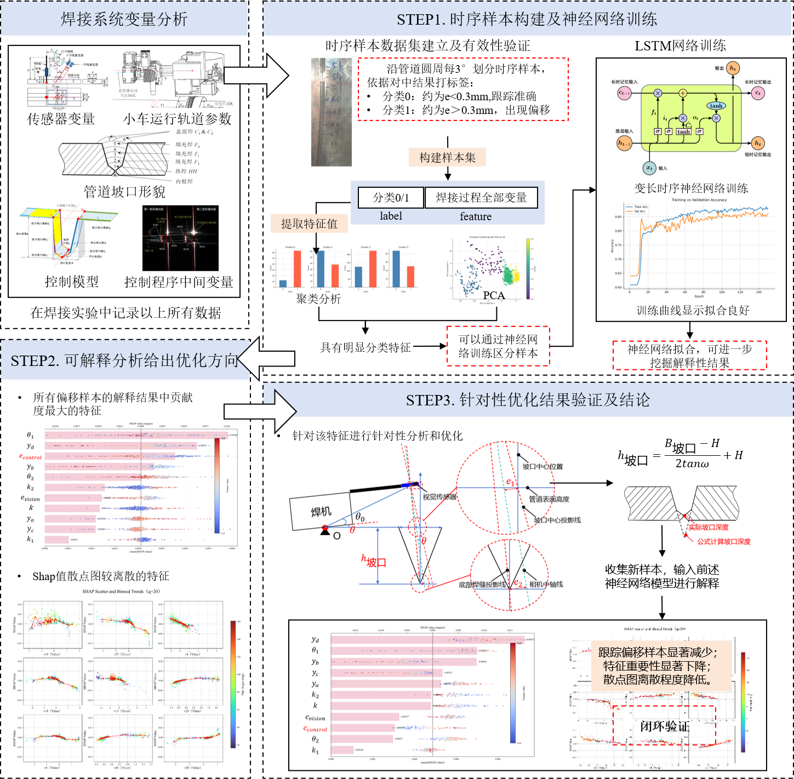
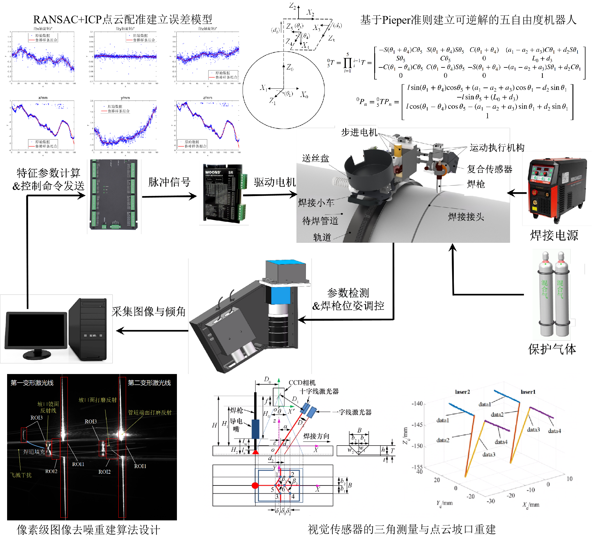
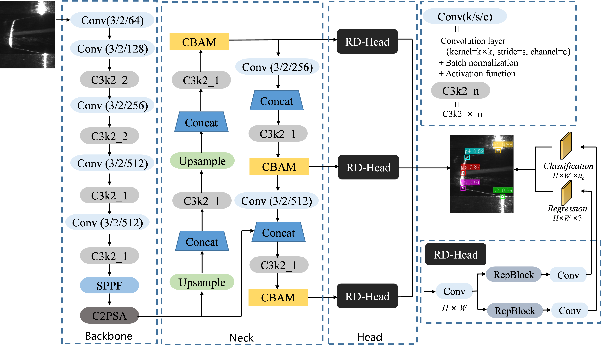

Zihao Wang
Tsinghua University
I am a master's student in Mechanical Engineering at Tsinghua University. My previous research spans physical robotic systems from sensing and perception to prediction, planning, control, and experimental validation.
These experiences have led me to broader questions about how intelligent agents should represent and predict the physical and human world for decision making. I am currently interested in embodied and spatial intelligence, multimodal learning, world models, and human-AI interaction.
Research Interests
I am interested in developing intelligent systems that can perceive, predict, and act in complex physical and human environments. My research interests lie at the intersection of embodied intelligence, learning-based robotics, and human-centered AI.
Embodied Intelligence & Robot Learning
Learning representations and decision-making mechanisms for intelligent agents interacting with complex physical environments.
Predictive Representation & Decision-aware Learning
Studying how learned representations support prediction, failure understanding, intervention, and adaptive decision making.
Human-centered AI in Physical Environments
Exploring how AI systems can understand, collaborate with, and adapt to humans through multimodal interaction and embodied experiences.
Selected Research

I developed a temporal learning framework for diagnosing prediction and control-model errors in an intelligent pipeline-welding robotic system. Eleven physical variables from the sensing-control pipeline were modeled using LSTM, while SHAP-based temporal attribution was used to identify variables associated with prediction failures.
Rather than treating attribution as the final goal, high-attribution variables were traced back to their underlying mechanical and control models. Targeted model corrections were then introduced and validated through physical experiments.

I worked on an end-to-end intelligent robotic welding system spanning structured-light sensing, geometric perception, robot modeling, trajectory estimation, planning, control, and physical validation.
My work included the design of a nonstandard five-degree-of-freedom welding robot based on the Pieper criterion, closed-form inverse kinematics, laser-line feature extraction, and three-dimensional system-error estimation through point-cloud registration using ICP and RANSAC.

I developed learning-based perception methods for real-time robotic welding, including YOLO11-based laser-line feature recognition and Weld-TRINet for real-time feature-point estimation.
I also contributed to a multimodal sensing system integrating vision and force sensing, and developed time-frequency-spatial image-processing methods to support automatic adjustment of torch pose and welding parameters in field operations.
Publications
International Journal of Advanced Manufacturing Technology, 2024. Co-first author.
Journal of Manufacturing Processes, 2025.
Welding in the World, 2025.
Under review.
Manuscript in revision.
Patents
Chinese Invention Patent CN121837275B.
Granted Jul. 28, 2026. (Student First Inventor)
Chinese Invention Patent CN119387995B.
Granted Aug. 12, 2025.
Education & Experience
M.S. in Mechanical Engineering
Tsinghua University
2024–Present · Beijing, China
GPA: 3.76 / 4.00
B.Eng. in Mechanical Engineering
Tsinghua University
2020–2024 · Beijing, China
GPA: 3.57 / 4.00
· Rank: 12 / 75
Technical Skills
Programming:
Python, C++, MATLAB
Engineering:
SolidWorks, AutoCAD
Research:
Machine Learning, Computer Vision,
Robotic Perception, Modeling and Control